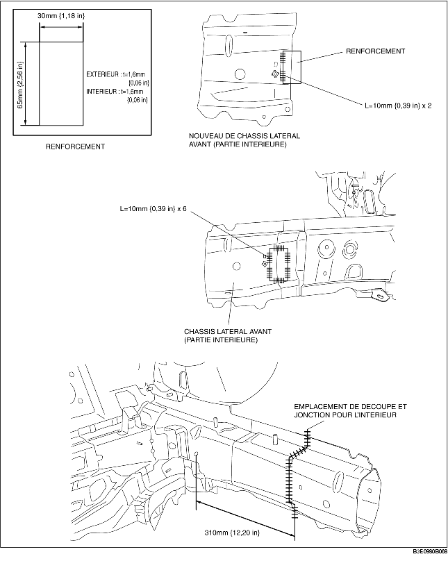
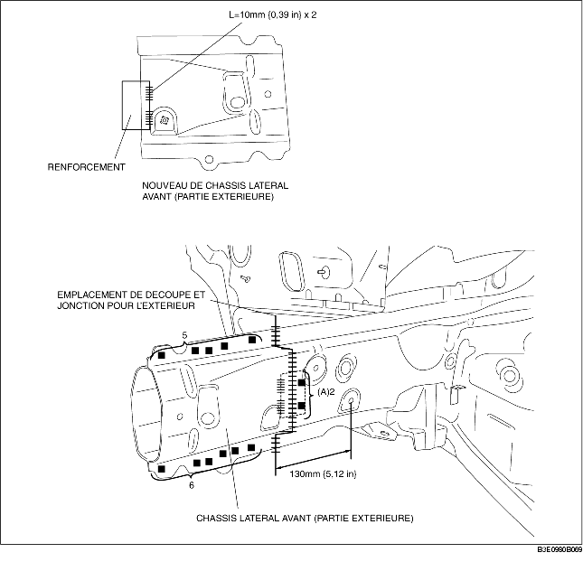

1. Créer un panneau de renforcement à l'aide du matériel du châssis latéral avant.
2. Pour découper et joindre les parties nouvelles et existantes, découper aux emplacements des nouvelles parties indiqués par la figure ci-dessous, puis biseauter les emplacements où se rejoignent les parties nouvelles et existantes.
3. Au moment de reposer de nouvelles pièces, essayer les avec les actuelles, puis mesurer et ajuster la carrosserie pour qu'elle soit conforme aux dimensions standard.
4. Pour installer l'intérieur, essayer les parties nouvelles et actuelles, ensemble, souder les existantes et le renforcement puis souder (en bout) les parties nouvelles et actuelles.
5. Parce que l'extérieur ne peut être soudé avec les parties existantes depuis l'intérieur du châssis, percer 2 trous pour les soudures en bouchon, aux emplacements indiqués par (A) sur les parties existantes. Installer le renforcement et les parties existantes par soudure en bouchon depuis l'extérieur du châssis, puis souder (en bout) les parties nouvelles et actuelles.
6. Meuler la zone où l'intérieur et l'extérieur sont soudés (en bout) avec une meule à disque pour donner une meilleure finition à la surface.

